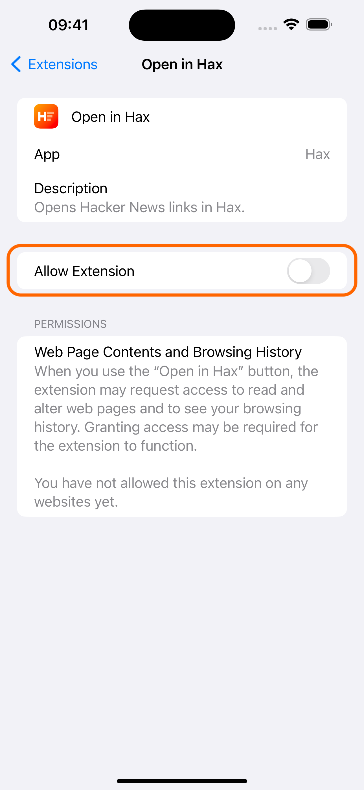

You can enable the "Open in Hax" Safari extension to be prompted to open Hacker News stories in Hax when you're browsing the website. Here's a step-by-step guide on how to do so:
Open the Settings app and select the "Safari" option.

Select the "Extensions" option.

Select the "Open in Hax" extension.
Turn on the "Allow Extension" switch.
Select the "news.ycombinator.com" option in the "Permissions" section.
Select the "Allow" option.
You're all set!